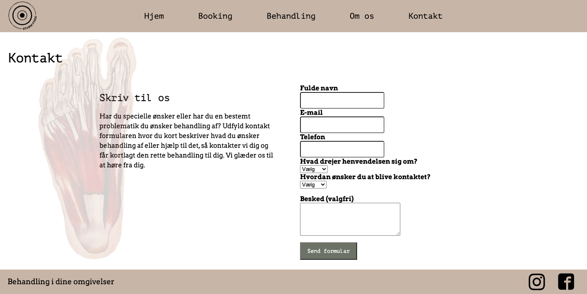
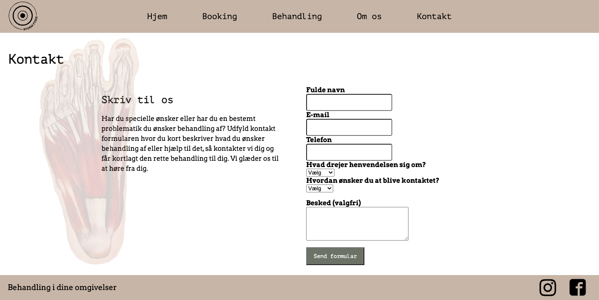
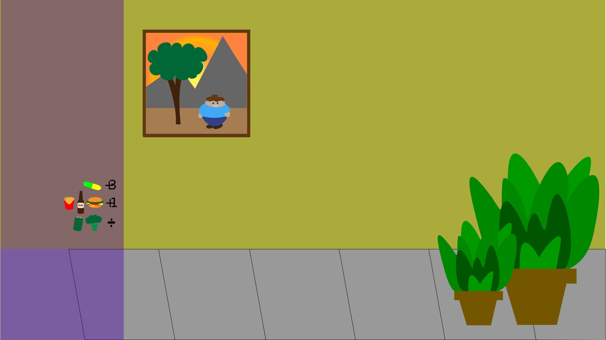
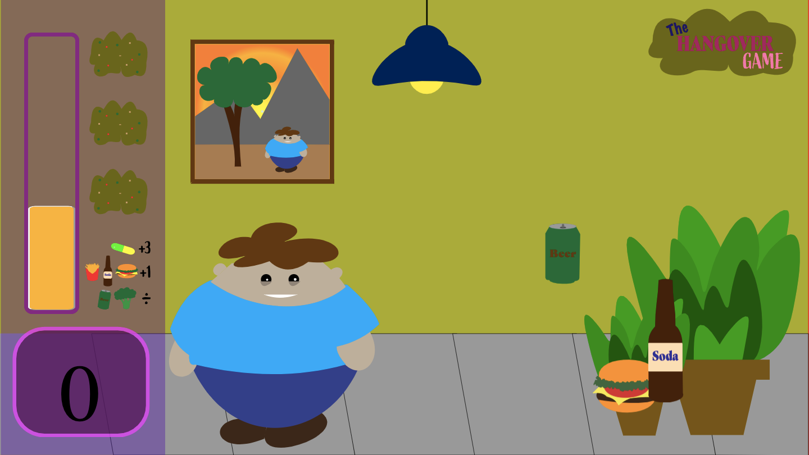
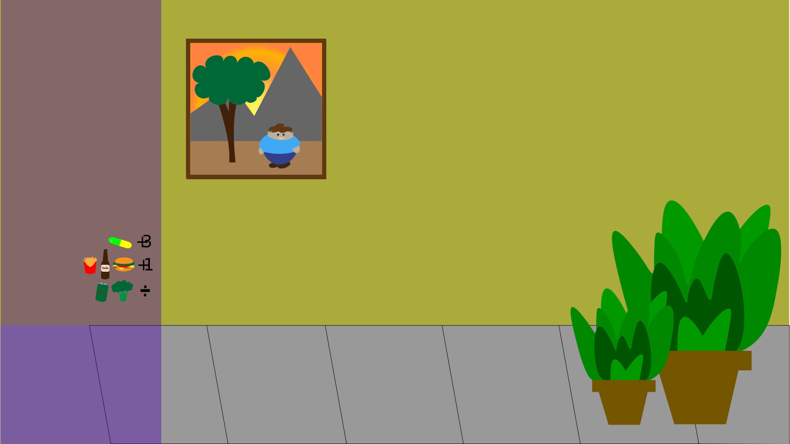
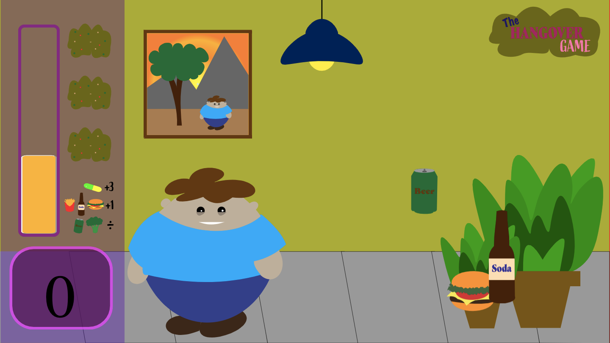

PORTFOLIO
ANDREAS MIELOW HAASTRUP
GRUNDLÆGGENDE INDHOLD REDESIGN - STORMFYSIK
Da vi nåede til det sidste forløb på dette semester, grundlæggende indhold, lagde vi ud med øvelser i videoredigering, dette indeholdt også pilotprojektet, som kan ses længere nede her på siden.
Herefter nåede vi til redesign forløbet som skulle udføres i grupper. Vi endte med at vælge en virksomhed som hedder Storm Fysik, som sælger wellness og dybdegående massage. Storm Fysik laver behandlinger i folks eget hjem så de ikke skal bruge til på transport til og fra behandling. Vi startede med at udarbejde test for at se hvad brugerne af sitet synes om dette, så vi havde et udgangspunkt.
Efterfølgende lavede vi designmæssige overvejelser omkring hvad vi gerne ville have det nye design til at udtrykke. Dette var måde en professionel og medicinsk tilgang til massagen med et twist at wellness. Derfor valgte vi meget lyse farver for at skabe et let udtryk men også prøvede at få det professionelle ind med billeder de fysiologiske kroppe. Dette kom også til udtryk i nye logo, for at gøre det mere let og professionelt. Videoerne ville vi gerne havde et udtryk af wellness, for at få et afslappet udtryk generelt på sitet.
Gruppen synes overordnet at vi nåede i mål med det vi gerne ville i forhold til hvad ejeren af virksomheden havde af overvejelser omkring sit site og det udtryk han gerne ville have. Processdokument og links til nye og eksistrende site kanfindes herunder.
LINK TIL NYT SITE:
NYT SITELINK TIL PROCESSDOKUMENT & TEMADOKUMENTATION:
PROCESSDOKUMENT & TEMADOKUMENTATIONLINK TIL EKSISTRENDE SITE:
STORMFYSIK.DKLINK TIL LANDINGPAGE VIDEO
VIDEO


 



 



GRUNDLÆGGENDE ANIMATION
I grundlæggende animation for formålet at vi skulle ende ud med er spil til mobile og laptop. Min ide process startede med forskellige ideer omkring en myretue til fredagsbar og tømmermænd. Jeg endte ud med at gå med ideen om at lave et spil som omhandler tømmermænd og mad.
Hvad vil man have når man har tømmermænd? Men vil have salt, burger, sodavand, måske en hovedpinepille. Derfor endte jeg med at lave et spil ide hvor man skulle fange burger, pomfritter, sodavand og ekstra point for pillen. Man vil i samme forbindelse ikke have en øl dagen derpå eller broccoli, dette giver minuspoint. Dette endte ud i spillet “The Hangover Game”, link til spillet kan findes herunder.
Kodningen i dette forløb betod primært af læring af animationer i spillet og hvordan man genstarter elle timer disse. Det var også i dette forløb vi fik itroduktion til Jave Script og om brugen af dette.
Min designmæssige process, startede med at jeg ville have en form for tegnet/ simpel tegnefilms udtryk i spillet, da jeg i andre forløb havde provet at arbejde meget med simple og faveløse udtryk. Dette endte ud i mange farver og forskellige skøre og runde former, både når det kommer til personen i spillet men og de assets som spillet indeholder. Link til design dokumentation, asset liste findes herunder.
LINK TIL SPIL:
LINK TIL ASSETLISTE:
GRUNDLÆGGENDE INDHOLD - PILOTPROJEKT
Pilotprojektet var starten af forløbet grundlæggende web. Projektet handlede at at lave en video til site, og forstå betydning af at have og producere video til sites. Undervisningen bestod af og havde øvelser i klipning af film i Premiere Pro. Vi fik ogsåin hvilke undervisning faktorer de rskal til for at producere en god video, interviewteknik, storyboard og frames, så man fik det udbytte af videoen, som man vil have i det endelige resultat.
Vi i gruppen filmede Naya som er passioneret omkring at male. Vi besøgte hende i hendes atelier, hvor vi interviewede hende og filmede forskellige frames og tog billeder. Dette endte med følgende udtryk.
LINK TIL SITE:

GRUNDLÆGGENDE UX
Forløbet i grundlæggende UX startede med at vi blev undervist forskellige research former, som observations research, survey- og interview-research. Dette skulle vi bruge til at undersøge marked og grundlaget for projekter.
Efterfølgende skulle vi lave research om vores idé til, hvor temaer var en t-shirt shop. Min ide gik på en T-shirt shop kaldet B-Basics, som kun skulle sælge sorte basic t-shirts i forskellige fits og fabrics, wide, long, organic, original osv. Så alle havde mulighed for at finde deres fit og preference.
Det designmæssige udtryk og idé, holder sig meget til hvad navnet på sitet udstråler. Det skal være en enkelt og simpelt udtryk for produkterne kunne træde frem i deres lille forskellighed i fits og fabrics. Temaet sort en en gennemgående tråd på hele sitet, som fonte og stil også her. Idé formulering kan ses i link herunder.
Til sidst i forløbet havde et forløb i grupper hvor vi pitchede for hinanden, pitchen kan ses i lin herunder.
GRUNDLÆGGENDE WEB
Responsive site V2, er det endelige produkt af forløbet grundlæggende web. Igennem forløbet lærte vi generelt om programmer til udvikling af websites, introduktion til kodning, fonte, farver, photoshop mm.
Introduktion til kodning skete i form af øvelser med HTML og CSS, det kunne være grid øvelser, layout øvelser, og grundlæggende viden om HTML og CSS til brug i det endelige projekt/studiestartsprøve.
Udgangspunktet for opgaven var at lave et site, hvor vi selv kunne bestemme emnet, men havde en bestemt ramme for hvordan sitet skulle opstilles i f.eks. sektioner og grid. mine designmæssige overvejelser var at bruge min egne billeder til at få et gennemgående tema og udtryk igennem sitet.
Splash Billedet blev et udtryk for vores tildelte stil i starten af forløbet, Neumorphism, som skulle laves i photoshop og indsættes på sitet. farverne endte med at være en mørk navyblå, da billederne har en blå og grå tone i redigeringsprocessen.
LINK TIL SITE:
RESPONSIVE SITE V2